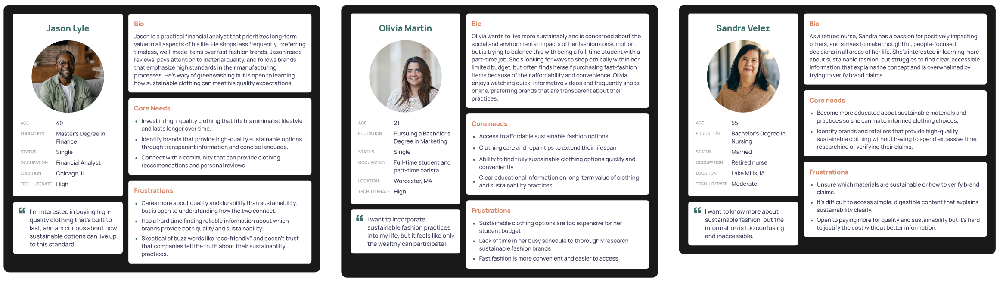
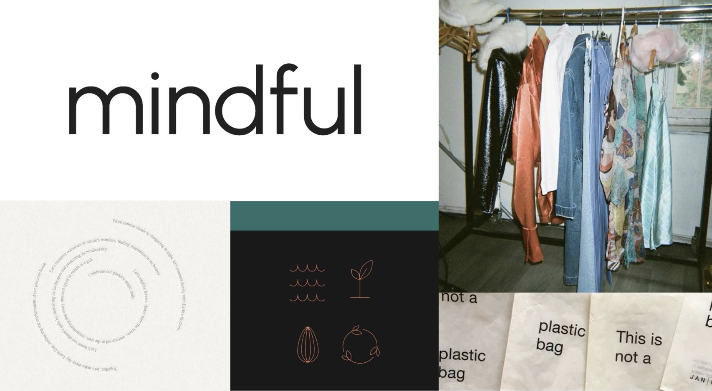

Clouro
Clouro believes that everyone should have access to the information they need to make sustainable fashion decisions. In a world saturated by greenwashing tactics designed to hide harmful policies and strip consumers of their purchasing agency, Clouro aims to cut through the noise and provide consumers with the truth that they deserve. With a dedication to transparency and reducing the environmental and social impact of fast fashion, the brand seeks to empower individuals to change their clothing consumption habits and embrace more sustainable practices: to buy better and less.
Solution:
Clouro is a high-fidelity app prototype that serves as a comprehensive resource for sustainable fashion. By providing transparent information on clothing items, including their materials, origins, production processes, and the real-world implications of each purchase, Clouro equips consumers with the tools they need to make sustainable fashion decisions. Additionally, the app aims to educate consumers on sustainability beyond the purchase through clothing care and repair tips, thrift store recommendations, and more. Key features include garment lookup through key words or barcode scan, clear brand sustainability ratings and information, and clothing lifespan metrics.
Competitor Analysis
In my competitor analysis, I analyzed 3 direct and 3 indirect competitors. I primarily focused on what features each app/website had and their brand elements such as taglines and look and feel. These are the direct competitors:
Product Details:
App and Website; Sustainable fashion directory with brand ratings and educational articles
Strengths
- Clean UI & clever taglines.
- Transparent rating system with clear criteria.
- Detailed brand insights and helpful filters by clothing type and price.
- Educational articles on sustainability.
- Offers exclusive discounts for top-rated brands.
Weaknesses
- No ratings or sustainability information for specific clothing items.
- Lacks focus on material quality in relation to durability.
- Some outdated information on brands.
Product Details:
App and Website; Sustainable fashion directory with brand ratings and educational articles. Also a tool for companies to measure and communicate their sustainability.
Strengths
- Comprehensive filters for values, products, and shopping types.
- Personalized shopping experience with favorites and follows.
- Verified sustainability claims for brands.
- Includes the option to rent clothing.
Weaknesses
- UI feels very techy and not representative of the brand’s purpose.
- Lacks standardized brand ratings.
- Some products lack detailed sustainability info.
- Inconsistent coverage of sustainability categories.
- No consumer-use metrics like product durability or wear predictions.
Product Details:
Website; Sustainable fashion and home directory with educational articles.
Strengths
- Clear sustainability labels.
- Research-backed brand evaluations.
- Displays certifications and has informative sustainability blogs.
- Offers sales and favorite-saving features.
Weaknesses
- Some products lack explanations for awarded sustainability labels.
- Unclear if availability of clothing product sizes are updated in real-time.
User Interviews
To begin the research process, my classmate Kara Rondinelli and I created a strategic plan with specific objectives to gather data that would help us understand our users effectively. Our first research method involved conducting user interviews, during which we created 39 open-ended questions to ask participants about their knowledge of sustainable fashion, current clothing consumption habits, perceptions of brand transparency, trust in clothing brands, awareness of clothing quality, and preferences for educational content and sustainability support.
I conducted three interviews and Kara conducted four.
User Survey
After the user interviews, Kara and I created an online survey to continue empathizing with and building our understanding of our users. This survey included 27 multiple-choice questions and was shared with our friends and family, coworkers, and published twice in the UConn Student Daily Digest email newsletter, which is received by all undergraduate students. In less than a week, we collected 158 responses. Based on this survey data and the user interview responses, we identified 8 key insights 5 primary pain points.
Key Insights
- Most people want to shop more sustainably but aren’t exactly sure what it entails to do so.
- Money and lack of knowledge are the biggest barriers in making more sustainable fashion choices and purchasing high-quality garments.
- Price and quality are the most important factors that influence consumer purchasing decisions, while sustainability is a lower priority.
- People don’t trust and struggle to verify clothing brands’ transparency and sustainability claims.
- People prefer to engage with educational content through social media (i.e. short/long-form videos and infographics) and articles.
- People want to or already engage in practices to extend the life of their clothes, such as sewing and mending.
- Most people would pay more for high quality or sustainable clothing depending on the price difference.
- People have limited knowledge of materials and attempt to verify clothing quality by physical attributes but are unable to distinguish between high-quality and/or sustainable materials versus those that are not.
Pain Points
- Cost Concerns: High prices are a significant barrier to purchasing high-quality and sustainable clothing. Many consumers feel that sustainable options are too expensive.
- Prioritization of Other Factors: Price and quality are often a higher priority than sustainability, making it difficult for consumers to shift their purchasing habits.
- Lack of Knowledge: Many users are unsure about what constitutes sustainability, how to verify brand claims, which brands are genuinely sustainable or not, and which materials are high-quality or sustainable. This uncertainty makes it challenging to make informed choices.
- Insufficient Educational Resources: Users prefer engaging educational content, but there’s a lack of accessible information that explains sustainability in a clear, concise, and compelling manner.
- Time and Skill Constraints: Many consumers lack the time to educate themselves about sustainable practices or to shop sustainably in general. Additionally, some feel they do not have the skills needed or time to learn about garment maintenance and repair, which can discourage sustainable clothing practices.
Empathy Maps
As I began to dive deeper into the information we collected, I created three empathy maps based on the user interviews I conducted. Each of these maps represents the unique experience of each user and outlines their behaviors, motivations, and challenges.

User Personas
Based on the user interviews, empathy maps, and user survey, I developed three distinct user personas to better understand the goals, needs, and experiences of the users I'm trying to target. These personas will inform and lead all of the design decisions I make in this project.
User Journey Mapping
I created journey maps for each of the three distinct user personas to visualize their current experiences with sustainable fashion. These outline the goals, thoughts, actions, and pain points of the personas through stages of awareness, searching for sustainable clothing, making a purchase, and upon receiving the sustainable item. This helped me recognize areas for improvement and develop possible solutions within each stage of their journeys.


Brand Mission & Vision Statements, Values, and Tone
Mission Statement
To empower all people to embrace sustainable clothing consumption practices by connecting them to transparent, clear information.
Vision Statement
To lead the world’s transition to a future of slow, circular fashion.
Values
- Transparency
- Accessibility
- Responsibility
- Usefulness
Styling Moodboard
This moodboard represents the visual brand direction of Clouro. I intend to utilize this type of "point-and-shoot," high-contrast photo styling, circular typography, paper textures, simple line illustrations, and a minimal, clean typeface.
Let's Talk.
Questions, comments, or just want to talk? Send me a message!